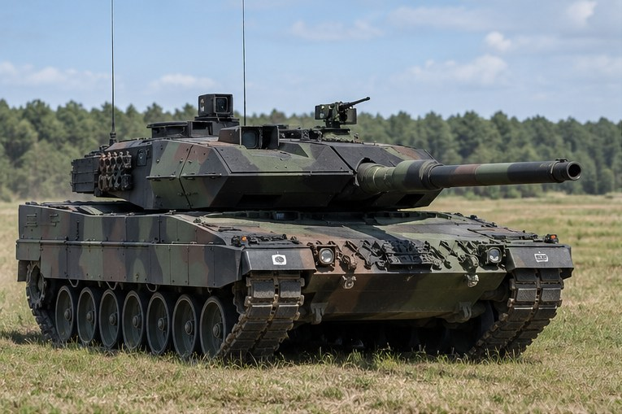
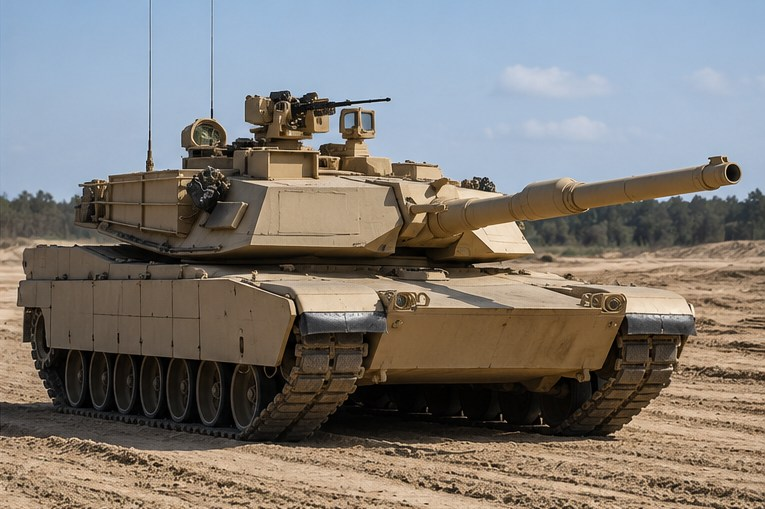
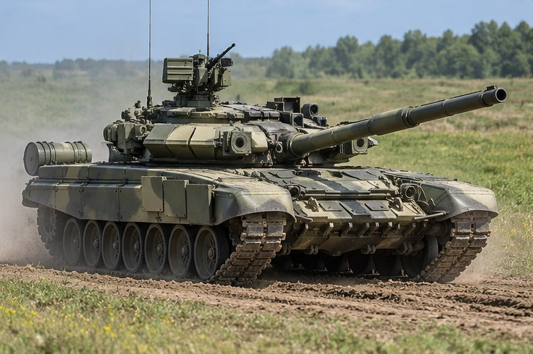
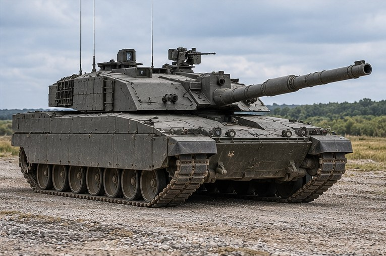

Leopard 2
Leopard 2 — немецкий основной боевой танк. Он известен мощным вооружением, защитой и высокой подвижностью.
Подробнее »



Leopard 2 — немецкий основной боевой танк. Он известен мощным вооружением, защитой и высокой подвижностью.
Подробнее »M1 Abrams — американский боевой танк с мощным двигателем, современной бронёй и системой управления огнём.
Подробнее »Т-90 — российский основной боевой танк. Оснащён 125-мм пушкой, комплексом защиты и современным оборудованием.
Подробнее »Challenger 2 — британский основной боевой танк, известный прочной бронёй и нарезной 120-мм пушкой.
Подробнее »